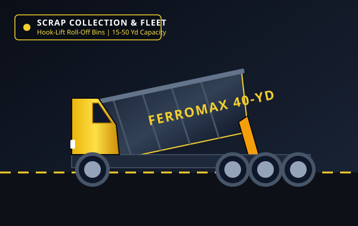
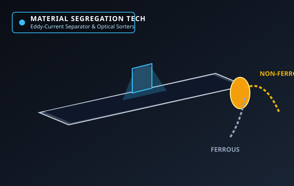
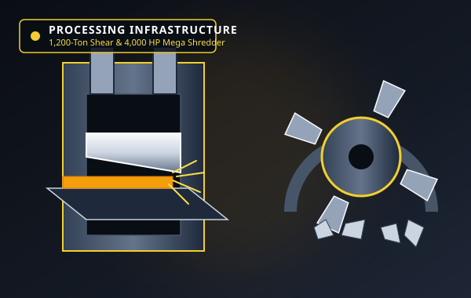
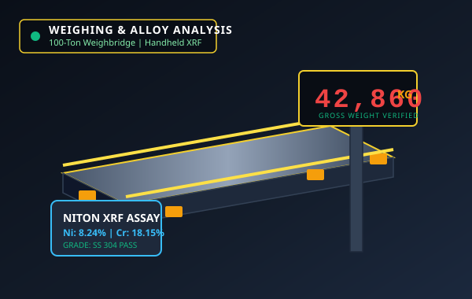
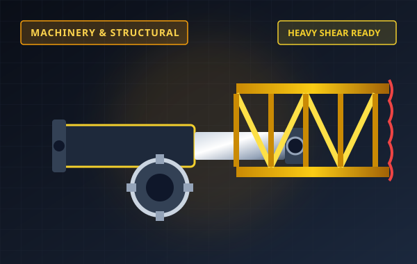
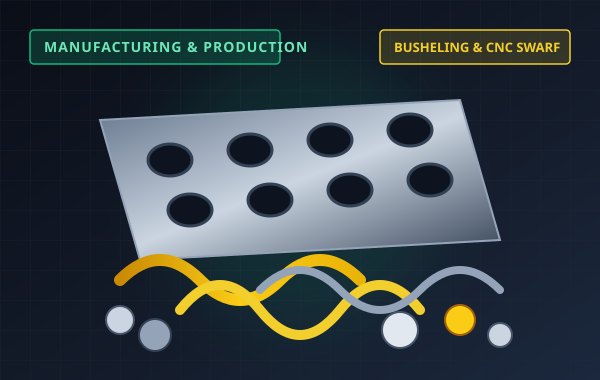
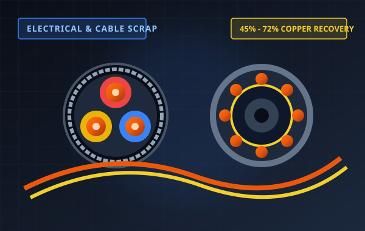
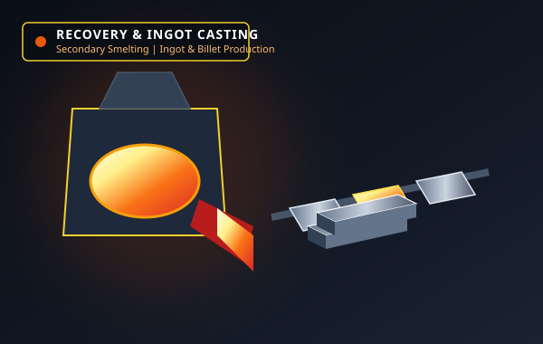

104 Industrial Wharf Road, Terminal 4
+1 (800) 482-7272
Scales Open: Mon-Sat 06:30 - 18:30
Dual 80-Ft Digital Weighbridges
From prompt industrial container dispatch to high-tonnage guillotine shearing and secondary induction smelting, explore our specialized metallurgical processing operations.

Heavy-duty logistical collection engineered for manufacturing plants, stamping facilities, automotive assembly lines, and industrial demolition projects.

High-throughput mechanical and magnetic classification separating bulk ferrous streams from high-value non-ferrous commodities.

State-of-the-art sensor-based sorting lines segregating complex mixed non-ferrous Zorba, Zurik, and Twitch alloys into discrete commercial fractions.

Certified scrap metallurgy verification laboratory providing instant non-destructive alloy chemistry analysis down to 0.01% element thresholds.

Massive hydraulic cutting force designed to rapidly size oversized structural steel, bridge girders, ship plate, and locomotive frames into furnace-ready charges.

Extreme hydraulic compaction densifying loose factory sheet clippings, busheling skeletons, and CNC swarf into ultra-dense melting bundles.

Multi-stage mechanical granulation and fluidized-bed air separation converting mixed insulated copper and aluminium power cables into clean chops.

Closed-loop secondary smelting infrastructure transforming clean scrap into certified circular foundry ingots, deoxidizing notch-bars, and billets.
Strategically positioned deepwater marine terminal engineered for high-tonnage international vessel stevedoring, rail logistics, and zero-leakage concrete pads.
650-ft private marine berth with 38-ft water draft accommodating Handymax bulk cargo vessels and bulk scrap barges.
35,000 DWT Vessel Rating12-inch heavy reinforced fiber-concrete apron with sealed drainage channels housing the 1,200T shear and 4,000 HP shredder.
Zero Permeability PadSecure 60,000 sq. ft enclosed warehouse facility for bare bright copper wire, brass valves, titanium, and superalloy inventory.
24/7 Monitored VaultDual 80-ft pitless truck weighbridges with optical plate recognition, radiation portal monitors, and live gross-tare scale slips.
NTEP Class III CertifiedIndustrial processing equipment deployed across our 45-acre deepwater handling terminal.
High-tonnage stationary shear cuts through 100mm heavy plate, structural bridge beams, and locomotive frames at 6 cuts per minute.
High-speed hammer rotor shredder with integrated wet-injection system for dust control and clean ISRI 211 fragmentized output.
Six Liebherr LH 60 rubber-tired material handlers with 20-meter boom reach, electro-magnets, and high-speed grapple attachments.
Continuous three-direction hydraulic compression press generating 16x16-inch high-density No. 1 Busheling scrap bundles for electric arc furnaces.
Heavy industrial rotary wire stripper and multi-stage air separation table separating high-voltage armored cables into 99.9% clean copper chops.
Medium-frequency coreless secondary induction melting furnaces with computerized melt controls for precision secondary ingot casting.
Coordinate priority scale turnaround for your commercial truck fleet, container dispatch, or heavy demolition drop-offs at our central terminal.
Book Scale Appointment View Current Scrap Rate Card